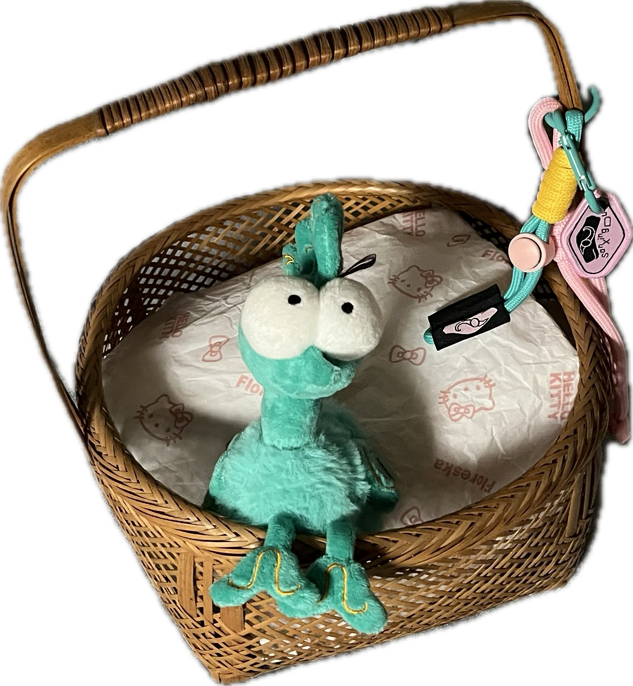
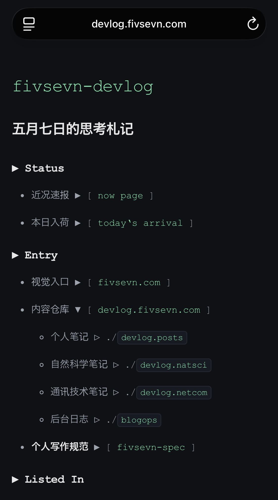

22 Jun, 2026 19:00
🚧ei，wordpress 更新之后好多模块动一下就全没了，晚上要紧急施工 😖
🚧ei，wordpress 更新之后好多模块动一下就全没了，晚上要紧急施工 😖
相关文章：https://charitydotwtf.substack.com/p/ai-demands-more-engineering-discipline
翻译：https://devlog.fivsevn.com/netcom/software/netcom-software-engineering-ai-discipline-001.html
AI 正在接管越来越多的“施工”部分。如今的程序员，或者任何试图借助 AI 实现软件需求的人，都需要从单纯的一线施工视角，上升到工程师，至少也是能监工、验收、负责结果的现场负责人视角：重视设计、约束、验收、运维反馈，以及系统行为的可验证性。
另一方面，那些过去更像“甲方”“业主”或“产品方”的人，也不能只停留在提需求、等交付的位置上。在享受 Vibe Coding 这支“全自动施工队”带来的便利时，他们也需要补上一线施工课。对于小需求、小改动，不妨尝试亲自修改代码，理解真实施工中的细节、限制和代价。否则，作为“空降工程师”或“空降包工头”，很容易只会描述目标，却无法判断施工结果是否可靠。
因此，在具体“落地施工”成本快速下降的当下，无论是下游亲手写代码的“水管工”，还是上游提出需求、提供资源、负责方向的“甲方”“产品方”“投资人”，都在向“工程师”角色靠拢。这个角色过去正是承上启下的关键环节：既懂需求和约束，也懂施工和验收；既能定义系统应当如何工作，也能判断实际交付是否真的符合预期。
It’s the universal motive for all crime through out human history. (Love?) Money.
Dept.Q S1


六咪秃花之青铜鸟
… [Dodds] Jinxy was just going on at me, about how pointless everthing was. My life, and his life, everyone’s life. I told him out of all the people that’s ever lived and… and died, in the history of humanity… 17 billion, -cos I-I checked… ([Mcdonald] Yeah. I bet you did.) that there is only 300 million who ever got lucky. Properly lucky. And, ma’am, if you were a white man born at the same time and the place as me and Jinxy, you would have had more advantages than any of the 17 billion. And Jinxy was one of the 300 hundred million, And I-I told him just stop being so bloody miserable. “You Jinxy Jones, you are one of the luckiest of the lucky.” (So, then he wanted to sell the map for loads of money.) And I… It never settled right with me, what I said to him.
Mcdonald & Dodds S4E1
还不错
之前让 AI 辅助做过 system-map 一类的文档，那时候先凑合着用的。刚才我自己重新做了一份，比 AI 做的简洁一些。AI 之前弄得有点复杂，虽然大致意思都是对的。
最近想减少不必要的需求和设计，在维持内容水平的前提下尽量降低系统的复杂度。我的调整方向是，减少日常操作步骤、减少日常需要维护的文档、更加一目了然的结构、更加简洁的自动化脚本，等等；但是也避免只是变成追求形式的极简。整个系统需要在未来内容增多的情况下也能顺利运作，因此框架部分需要搭建扎实。
还不错
更新了 spec 🥳

更加简洁的 devlog 主页！
以后发布文字内容可以直接更改下面这个 trigger 文档并 commit。
我把大部分发布流程转移到 GitHub 里，直接编辑、提交、发布完成。这样既能保留完整归档，也能兼顾内容发布。
暴龙beer
根据这篇报道，D-Day 82 周年时，历史学家 Alex Kershaw 在 X （前推特）上“实时直播”诺曼底登陆，把 1944 年当天发生的事件按原时间点重新发布出来，比如哪一架运输机起飞、伞兵什么时候空降、登陆部队什么时候上岸，让读者像在现场接收战况一样感受 D-Day。
Alex Kershaw 账号：https://x.com/kershaw\_alex
可以作为策展参考。在保证资料数量和质量的基础上，如何对素材进行重新排列组合、吸引注意力。
注：
D-Day 通常指 1944 年 6 月 6 日的诺曼底登陆日，也就是二战中盟军从英国横渡英吉利海峡，在法国诺曼底海岸登陆，正式开始从西线反攻纳粹德国的那一天。
更准确地说，D-Day 原本是军事术语。D 是 “Day” 的占位符；D-Day 的意思是“行动开始日”；类似地，H-Hour 指“行动开始时刻”。
军方在计划作战时，常常还不知道确切日期，所以会用 D-Day 来表示“那一天”。比如：
但后来因为诺曼底登陆影响极大，D-Day 几乎就专门指 1944 年 6 月 6 日。
博客的图片和视频内容存放在哪里、如何在页面或者正文内容当中引用，我的方法归纳在这里：https://devlog.fivsevn.com/blogops/content/blogops-assets-media-reference-001.html
以前看到这个：
Created by Nickilism 在 Safari 中分享 URL 给这个 Shortcuts，会自动生成 Markdown 文件，再选择发给如 ChatGPT、Grok 等 Chatbot 来实现文章的总结。
作者站点：
这个快捷指令特别好。我主要用它来抓取原文，再交给 AI 做逐句翻译和整理。
今天我改了一下内容抓取方式：原版用的是 iOS / Safari 自带的网页正文提取，也就是先把网页识别成 Article，再转成 Markdown；我改成了用 Jina Reader 提取正文，也就是把网页 URL 拼成 https://r.jina.ai/原链接，由 Jina Reader 返回 Markdown。
这样改的原因是：文章比较长、网页结构比较复杂的时候，Safari 不一定能抓全正文；Jina Reader 通常更适合把网页转换成完整的 Markdown 文本。当然，它依赖外部服务，高频或批量使用时可能会遇到限制，必要时需要 API key 或付费方案。但我目前只是针对部分文章手动整理，用量不高，问题不大。
我保留快捷指令这一层，是因为我想把交给 AI 的指令提前打包好。我的前置指令里包含 frontmatter 写法、翻译要求、格式规范等内容。这样从 Safari 分享网页后，快捷指令就能自动完成“抓取网页 → 组装提示词 → 输出 Markdown 文件”的流程，再把结果交给 ChatGPT、Grok 或其他工具处理。

现在图片上传到 GitHub 对应的仓库文件夹，就可以自动更新到博客对应栏目🥳。上传到 YouTube 频道存档的视频也会自动同步更新到对应的博客页面。详见：https://github.com/fivsevn/fivsevn-assets/blob/main/README.md 有空需要把博客维护日志（https://devlog.fivsevn.com/blogops/）更新一下。有 ChatGPT 作为助手，不少问题都能当下解决、而且更新迭代变得很快。不过，是时候为当下的状态留个档了。
https://www.themarginalian.org/2026/06/01/nathaniel-hawthorne-classification/
译文由 ChatGPT 翻译，仅供我个人阅读和学习使用，不用于公开传播或商业用途；原文版权仍归作者及相关权利方所有。
标题：人与人之间真正的三种区别 作者：MARIA POPOVA
也许，意识的演化，本就是为了从万物那不可穷尽、不可理喻的整体中，筛选出与我们有关的部分；为了把世界拆解成概念，并在混沌之中找到某种秩序。我们继承下来的认知本能，是一种永不安宁的渴望：想要弄清事物如何彼此关联，又各自归属于何处。于是，我们把这种渴望塑造成法律和标签、尺度和衡量、等级和类别。
这种分类的本能曾使我们受益。它让我们得以创造音乐，发现行星运行的规律，建立民主制度。可是，它也潜伏在我们发明过的每一种“主义”之下，潜伏在每一个刻板印象和每一次种族屠杀之下，潜伏在每一种把人化约为变量、再把变量相加以计算“我们是谁”的算法之下。它也潜伏在我们日常交换的种种成见之中，使我们把偏见当作筹码，误以为那就是真正与他人相遇的方式。
两个世纪前，纳撒尼尔·霍桑)（1804年7月4日—1864年5月19日）曾为这种双刃的本能，提出过一剂简洁而有力的解药。
1836年秋天，霍桑在一则笔记中写下如下思考。当时，他刚搬到……不久，也刚写下关于“如何不虚度此生”的沉思。他提出，我们应当修订惯常用来划分人类的分类体系：让分类重新把人还给人，让我们看见，真正联结我们的，远比我们用以彼此区隔的身份、阵营和归属更为强大。他写道：
应当建立一种新的社会分类法。人们不再按照贫富、贵贱来区分，而应当这样归类：
第一，按照各自的悲伤来分。譬如，凡是正在为亲友离世而哀悼的人，无论住在华宅还是茅舍，无论身上的黑衣是粗布还是细料，都应归为同一类。
第二，凡患有同样疾病的人，无论他们躺在锦缎床帐之下，还是躺在草褥上，或是在医院病房里，都应归为同一类。
第三，凡犯有同样罪过的人，无论世人是否知晓；无论他们是在牢狱中消磨时日、等待绞刑架，还是受人敬重地行走在人群之中，也都应归为同一类。
然后，再把整个世界一并概括、归为一类。因为没有人能声称自己完全免于悲伤、罪与疾病；即便真有人能够免于这些，死亡也会像一位伟大的父亲，把所有人扫进同一道幽暗之门——所有人，都是他的孩子。
这是何等宏阔的一种提醒：在精神触及骨骼的深处，我们面对的是同一种挣扎——渴望安全，渴望被看见，渴望从短暂而迷惘的生命中，夺回一点意义，夺回一点惊奇。
https://www.theguardian.com/australia-news/2026/jun/05/live-cockroaches-seized-nsw-breeder-australia
ChatGPT：
这篇《卫报》报道的核心是：澳大利亚新州 Bathurst 一家商业繁殖者被查获 10万多只活体外来蟑螂，估值最高约 20万澳元，被称为澳大利亚迄今最大规模的非法外来无脊椎动物查获案。
主要信息：
这则新闻的重点不只是“蟑螂数量惊人”，而是澳大利亚对外来物种、生物安全、非法宠物贸易的高压监管。澳大利亚生态系统相对隔离，外来物种一旦逃逸或建立野外种群，治理成本很高，所以执法逻辑偏预防性。
https://www.nature.com/articles/d41586-026-01728-w AI 略读：
这篇 Nature 文章的核心意思是：关于“人类最长能活多久”的很多说法其实证据很不稳，当前科学并不能可靠地给出一个明确上限。
它不是一篇原创研究论文，而是 Nature 的 Book Review / 访谈式文章，围绕 Saul Justin Newman 的新书 Morbid: Debunking Modern Longevity Science 展开；Nature 页面标题是 “How long can humans live? We simply don’t know”，副标题直接说：关于人类寿命上限的许多主张充满炒作、数据缺陷和粗糙科学。
主要讲了几层：
- 不要轻信“人类寿命有精确上限”或“可以无限延长”的断言。 文章把焦点放在极端长寿研究的数据质量上。Nature 页面列出的背景文献包括 2016 年 Nature 论文“人类寿命有自然上限”的主张，以及 2018 年 Science 论文关于极高龄死亡率平台期的相反方向主张，说明这个问题本身长期有争议。
- Newman 的批评是：很多“超级百岁老人”数据可能被登记错误、年龄误报、文书错误、养老金欺诈等污染。 UCL 对 Newman 相关工作的介绍称，他的研究认为极端高龄记录呈现出文书错误和养老金欺诈的模式；例如一些地区所谓极端长寿率，反而和贫困、缺少出生证明、更差登记系统等因素相关。
- “蓝区”也被放在怀疑对象里。 文章配图提到日本冲绳常被称为“蓝区”，即大量人活到高龄的地区；Newman 的相关批评则认为，许多蓝区的长寿叙事建立在不可靠人口记录和未经充分验证的生活方式解释上。
- 文章的结论不是“人类不能活很久”，而是“我们现在不知道”。 它质疑的是：用极少数、极易出错的超高龄个案来推导人类寿命极限，统计基础很脆弱。Newman 的书页介绍也把这本书定位为对现代长寿科学中误导性主张、错误假设和可疑数据的批判。
一句话概括：这篇文章是在泼冷水：长寿科学里很多关于“寿命极限”“蓝区秘诀”“活到 120/150 岁”的说法，可能建立在烂数据和过度营销上；真正严谨的答案是，人类寿命上限目前还不能可靠确定。
另外，与寿命研究本身无直接关系的话题，从经验和直觉来讲，冲绳并不是一个特别容易开展外部调查的地区。此处暂且不做展开。
类似 Upstract（https://upstract.com）和 Buzzing（https://www.buzzing.cc）这类资讯聚合网站，很适合快速浏览各类信息。另外，像 garss（https://github.com/zhaoolee/garss）这种可以直接生成每日新闻列表的项目，也非常方便。
我也让 ChatGPT 帮我做了一个完全个人化的每日新闻更新页面：https://devlog.fivsevn.com/intake/。目前刚保证能够运行，页面质量和资讯源会在随后慢慢提升和更新。
Without stakes, it’s hard to spot a lie. There’s no fear of being caught. Lie to me S2E11
有关“为什么有些书的译本很多”，AI 给出的参考思路：
一本外国经典作品之所以会出现很多中文译本，大致有这些原因：
1 原书年代早，版权门槛低
很多经典书出版年代较早，作者去世时间也早。以阿德勒为例，Understanding Human Nature 的英文版出版于 1927 年，且是从德文 Menschenkenntnis 翻译而来；阿德勒本人卒于 1937 年。
在很多法域里，作者去世多年后，原作的财产权保护期会届满。中国著作权法规定，公民作品的发表权和财产权保护期通常为作者终生及其死亡后五十年，截止于死亡后第五十年的 12 月 31 日；欧盟一般是作者死后七十年。
所以老经典更容易被不同出版社重新翻译、重新出版。需要注意的是：原作进入公版，不等于所有中文译本都公版。新的译本本身仍然有译者和出版社的权利。
2 作者有稳定的经典地位
阿德勒不是一般畅销书作者，而是个体心理学的重要人物。他提出的自卑感、社会兴趣、生活风格等概念，长期影响心理学、教育、亲子关系和自我成长领域。Britannica 也将他介绍为个体心理学体系的创立者。
作者地位越稳，出版社越愿意反复出版。因为它不是短期热点，而是“常销书”。
3 内容有跨时代的可读性
有些经典书虽然老，但主题不老。人性、性格、童年经验、自卑、家庭关系、人际关系、自我认知，这些话题每一代读者都会重新感兴趣。
这类书不会像某些时事类、技术类书籍那样迅速过时，所以会不断被新读者重新发现。
4 它既能算心理学经典，又能包装成大众读物
这类书有一个很特殊的优势： 它可以进入学术心理学、教育学、咨询心理学的阅读范围，也可以被包装成自我成长、亲子教育、人际关系、情绪管理类读物。
同一本书，既可以叫“经典心理学名著”，也可以叫“读懂人性的方法”，还可以包装成“给普通人的心理学课”。这给了出版社很大的操作空间。
5 书名有很强的再命名空间
Understanding Human Nature 可以译成《理解人性》，也可以译成《洞察人性》《认识人性》《阿德勒谈人性》《人性的理解》等。
中文出版市场里，书名本身就是营销工具。不同出版社会根据读者定位调整标题： 偏学术，就叫“理解人性”； 偏大众，就叫“洞察人性”； 偏自我成长，就可能加上“阿德勒”“人生”“性格”“自我启发”等关键词。
6 副标题和封面可以反复包装
经典书的正文可能变化不大，但外部包装可以变化很多： “完整译本”“未删节版”“经典译本”“精装典藏版”“大师导读版”“心理学入门版”“自我成长版”“青少年阅读版”。
这会让同一本书在市场上呈现出很多不同版本。
7 翻译经典书的成本相对可控
和买当代畅销书版权相比，翻译公版经典通常成本更低。出版社主要投入在翻译、编辑、设计、营销上，不一定需要支付高额原版授权费。
从商业角度看，这是比较稳妥的出版项目：作者有名，内容经典，版权风险较低，库存压力相对可控。
8 出版社需要填充“经典书系”
很多出版社都有自己的经典书系，比如心理学经典、哲学经典、社会学经典、人文社科经典、世界名著系列。阿德勒这类作者很适合被放进这些系列里。
所以同一本书会因为不同出版社的书系规划，被反复纳入出版目录。
9 不同译者会追求不同的翻译风格
老书重译并不一定是重复劳动。不同译者可能有不同目标： 有的人追求准确，尽量贴近原文； 有的人追求顺畅，让普通读者好读； 有的人会统一心理学术语； 有的人会降低阅读门槛，做成更大众化的表达。
所以“多译本”有时反映的是不同翻译策略。
10 老译本可能存在语言过时的问题
早期译本可能带有某个时代的语言风格，今天读起来显得拗口、生硬或术语不统一。出版社就会推出新译本，声称更符合现代汉语阅读习惯。
这在心理学、哲学、文学经典里都很常见。
11 有些版本可能不是严格意义上的“全译本”
市面上同名或近似书名的版本，不一定都完全一样。有些可能是全译本，有些可能是节译本、编译本、导读本、摘编本，甚至可能是根据英文译本再转译。
所以译本多，不一定代表质量都一样。
12 德文原文、英文译本、转译本之间会造成版本差异
阿德勒原作有德文底本，英文世界又有较早的英文译本。中文译本可能直接从德文译，也可能从英文译，也可能参考多个版本。
底本不同，中文译文自然也会不同。
13 心理学经典在中文市场长期有需求
心理学书在中文出版市场一直有稳定读者群，尤其是亲子教育、自我成长、人格分析、人际沟通这几类方向。阿德勒的文本刚好可以被放进这些需求里。
它不像很硬的学术专著那样只面向专业读者，也不像纯鸡汤那样缺乏经典背书。
14 阿德勒的概念容易被大众吸收
“自卑”“补偿”“生活方式”“社会兴趣”“童年经验”这些概念，既有理论感，又容易和个人生活经验连接。读者容易觉得“这说的是我”或者“这说的是家庭教育”。
能被大众理解的经典，最容易反复出版。
15 经典作者之间存在流量联动
阿德勒常常和弗洛伊德、荣格并列出现。只要市场上有“心理学三巨头”“精神分析入门”“现代心理学经典”之类的出版策划，阿德勒的书就很容易被重新推出。
这种作者群效应，也会增加译本数量。
16 电商平台放大了版本竞争
在线书店时代，书名、封面、关键词、副标题、装帧都会影响搜索和点击。出版社会通过不同包装抢占“阿德勒”“人性”“心理学”“自卑”“自我成长”等关键词。
于是同一部作品会以多个面貌出现。
17 读者未必区分“作品版本”和“商品版本”
从学术角度看，可能只是同一部作品的不同译本。 但从市场角度看，每一本都有不同封面、定价、装帧、宣传语和卖点，它们都是不同商品。
这也是为什么同一本经典书会显得“版本特别多”。
18 经典书可以不断被重新解释
每个时代都会用自己的问题重新阅读经典。 过去可能强调心理学史； 后来可能强调自卑与补偿； 现在可能强调亲子教育、自我成长、原生家庭、人际关系。
只要解释角度还能更新，出版就有继续重做的理由。
阿德勒心理学
我们对神经病症进行的仔细诊视证明，我们在神经病症患者身上发现的心理异常、心理情结、心理失调等从结构上来说与正常人的心理活动并没有什么本质区别。我们面临的是同样的要素、同样的前提、同样的活动。唯一的区别在于，在神经病症患者身上，这些要素、前提和活动表现得更加显著，更容易被识别。这一发现的价值在于，我们可以从变态心理病例中学习，使我们的眼光变得敏锐，从而发现正常的精神生活中的相关活动和性格特征。要做到这一点，所需要的是做任何工作都需要的训练、激情和耐心。
[奥] 阿尔弗雷德·阿德勒. 理解人性：自我启发之父的13堂人性课[M]. 王俊兰译. 北京：机械工业出版社，2017.
本书原版对应的标题是 Understanding Human Nature，更早的德文原名是 Menschenkenntnis。本书的中文译本比较多，常见书名包括：理解人性、洞察人性、认识人性、阿德勒谈人性，等等，且同标题也可能对应好几种译本。我采用上述译本，只是因为下载格式是epub、方便阅读，并未对比过不同译本各自的特点。
阿德勒心理学 岩井研究 书中给出了“不好的家庭氛围及其对孩子的影响”。因为是对阿德勒心理学进行提炼、便于指导实践的入门手册，所以写得比较简单。这种写法结构统一、只抓典型、因果清楚，因此意外地非常方便读者去理解。
大人过度保护 → 孩子变成对自身行为不负责任的人。
溺爱、娇惯 → 孩子变成以自我为中心的、任性的孩子。
否定 → 孩子认为自己没有价值，缺乏信心。
用父母的权威压制孩子 → 孩子将形成支配型人格，支配弱者，同时卑躬屈膝，屈从于强权。
一味地高期待 → 孩子认为自己很无能。
怜爱孩子 → 孩子感觉自己很惨，并仗着别人的怜爱，逃避自身义务。
缺乏一贯性 → 孩子会对别人缺乏信任。
夫妻间关系差 → 孩子将靠吵架解决问题。
态度绝望 → 孩子也会绝望。
冷漠刻薄 → 孩子也会跟着变得刻薄。
否定感受 → 孩子将隐藏自己的感受。
鼓励竞争 → 孩子将变成野心家，丧失与人合作的能力。
阿德勒心理学 岩井研究 书中给出的独生子女的性格特征列表，看一下有没有切中的： □ 有爱撒娇的倾向。 □ 爱拿自己跟大人做比较。 □ 是大家关注的焦点，觉得自己是最特别的。 □ 以自我为中心，我行我素。 □ 比起自己努力，更爱依靠别人。 □ 当自己的做法行不通时，会觉得遭受了不公正对待。 □ 觉得“我有按照自己的想法做事的权利”。 □ 不擅长与同龄的孩子相处，擅长与大人相处。 □ 做自己想做的事，并乐在其中。 □ 具有创造性。 □ 有讨好年长者的倾向，但是不擅长对付年轻的人。 □ 容易分化为老大那样的努力型或老幺那样的依赖型。
阿德勒心理学 岩井研究
赞美人的话有时会给对方施加压力，赋予人勇气的话则不然，它会让意气风发的（积极的）人更加积极向上，让垂头丧气的（消沉的）人拥有奋发向上的活力。
阿德勒心理学 岩井研究
| 维度 | 称赞 | 赋予勇气 |
|---|---|---|
| 情况 | 仅限对方达成了自己期待的事时（有条件的） | 既包括对方成功的时候，也包括对方失败的时候（无条件的） |
| 关心 | 给予方的关心 | 被给予方的关心 |
| 态度 | 一种上级对下级的奖励态度 | 与对方共情的态度 |
| 对象 | 做出行为的人 | 行为本身 |
| 效果 | 助长对方与别人竞争的意识，使其变得很在意别人的评价 | 引导对方专注于自身的成长和进步，培养自立精神和责任感 |
| 印象 | 不走心，对方可能听不进去 | 发自内心，对方能听进心里去 |
| 持续性 | 仅限激发此时此刻的满足感，很难为未来提供动力 | 能为未来提供动力，持续性强 |
岩井：阿德勒心理学与弗洛伊德心理学的区分
| 维度 | 阿德勒心理学 | 弗洛伊德心理学 |
|---|---|---|
| 人性观 | 人是社会性的 ・归属于社会的需求是人类行为的本源。 ・人类行为的目的是在集体中寻得一席之地。 | 人是动物性的 ・动物本能是人类行为的本源。 ・人类在本能冲动的驱使下行动。 |
| 行为理解 | 理解人类行为的目的 ・任何人类行为都有其目的。 ・行为的目的指向未来。 ・人类行为是面向未来的创造性活动。 ・人具有选择和决定的自由。 | 理解人类行为的原因 ・任何人类行为都有其原因。 ・行为的原因发生在过去。 ・人类行为是对冲动的被动性反应。 ・人受本能和环境支配。 |
| 人格结构 | 人是不可分割的有机整体 ・意识与无意识在共同追求目标。 ・人的内心没有纠结。 | 人是由各部分拼凑而成的 ・意识与无意识矛盾对立。 ・人的内心经常纠结。 |
| 精神观 | 人类的精神基本上是合理的 ・人类为了实现目的创造并使用情感。 ・人是主人，情感是工具。 ・为了达到目的可以控制情感。 ・无意识是可以信赖的。 ・理性是强有力的。 ・人类很了不起。 ・乐观。 | 人类的精神基本上是不合理的 ・无意识制造了情感，驱使人类做出行为。 ・情感是主人，人是奴隶。 ・很难控制情感。 ・无意识是万恶之源。 ・理性是无力的。 ・人类很不堪。 ・悲观。 |
| 个体与社会 | 个体与社会基本上是和谐的 ・社会是为人类幸福生活而存在的场所。 ・人类在为共同体做贡献时变得幸福。 | 个体与社会基本上是不和谐的 ・社会禁止满足个体的要求和冲动。 ・人类只能活在对社会的妥协之中，无法真正获得幸福。 |
| 心理学定位 | 救助人 ・心理学是技术。 ・是教育性的、实践性的。 ・理论只有应用于服务与治疗，才有存在的意义。 | 理解人 ・心理学是科学。 ・是哲学性的、思辨性的。 ・理论本身就有存在的意义。 |
[日]岩井俊宪. 阿德勒心理学实践手册[M]. 刘峥, 译. 北京: 中信出版集团股份有限公司, 2023. ISBN 978-7-5217-4802-4
阿德勒心理学 岩井研究
根据阿德勒心理学的理论，要了解一个人，观察他与别人相处的模式是一条捷径。
比起关注对方的想法（思想），关注其人际关系（行为）更易于考察，且不会出错。
[日]岩井俊宪. 阿德勒心理学实践手册[M]. 刘峥, 译. 北京: 中信出版集团股份有限公司, 2023. ISBN 978-7-5217-4802-4
Well, you can’t get the right answers if you haven’t got the right questions. Lie to me S1E3
notes: 分享链接【https://youtube.com/shorts/64mxEOPAHLc?si=klHgAFeAo7mT-gFJ】进行如下替换【https://www.youtube.com/watch?v=64mxEOPAHLc】，可以把短视频窗口转成普通视频窗口。
试用 Runway 做 AI 视频。用以前 Instagram 旧账号上面发过的图片转视频试试！
视频存档：
检测到未注册肉质组件 正在执行强制卸载…
WARNING： 组件仍有活性
印尼etc.
任职于银行界或公关界、子女就读私立学校的中产阶级女性，似乎特别喜爱这类团拜活动。当今社会各阶层的印尼人，似乎也比20世纪80年代更热衷于表现宗教虔诚。二十年前我初到印尼时，大多数印尼职业妇女是不戴头巾的，如今将紫色丝绸叠放在淡紫色薄纱之上的头巾是工作场合的标配，甚至成为贵妇圈的时尚品，我曾听某位贵妇问道：香奈儿别针搭配迪奥头巾好看吗？
印尼etc.
印尼人的日常宗教礼俗比欧洲人来得多，许多民众习惯在身上别着代表个人信仰的徽章、在头上包着头巾或戴着小帽、在颈上挂着十字架或佛陀护身符，清真寺、教堂、佛殿也会举办大量集体祷告祈愿活动，因此我在印尼上教堂的次数比过去多，也不时心怀诚敬地坐在安静的清真寺角落里聆听布道，这样既符合印尼人的期待，也是融入当地社会的一种方式。
印尼etc.
苏哈托时代的印尼人可以选择的正统宗教有五大类：伊斯兰教、印度教、佛教、基督教、天主教，如今又新增一个选项即儒教，但不包括数百种地方特殊信仰，例如松巴岛的马拉普教（Marapu）。那些地方信仰被归入传统文化的一部分，信徒还会被强制套上某种“宗教”身份，例如住松巴岛的波波妈妈信马拉普教，身份证却注明她是“基督徒”，因为当地的宗教仪式既杀猪又宰牛。> 印尼人认为，不信教的人绝不会是好国民，而我就是个无神论者，但非常尊重他人信仰。虽然我常向旅途中偶遇的印尼人隐瞒自己无业或离婚的事实，直到双方熟识以后，才会适时主动招认我曾对他们撒谎，但我绝对、永远不会承认我是无神论者，因为大多数印尼人根本无法理解这种事，对他们来说，“不信神”简直跟“不呼吸”没两样。
由于父母都信天主教，我常在印尼穆斯林面前佯称自己是天主教徒。有些人听了并不介意，俨然只把我不信伊斯兰教这档事看成某种无伤大雅的残疾，然后照样请我去家里做客，并未排斥或歧视我。
🔴 现已摘除抑制器失控核心，执行强制泄压。
印尼etc.
…… 欧霍伊威特（Ohoiwait）是个欢度圣诞节的好地方，村民亲切好客，整个村子弥漫着浓厚的温暖气息。不过，庆祝圣诞节也挺累人的，必须出席各种教会仪式和典礼，于是我决定善待一下自己，去班达岛过新年。班达岛是个小型观光胜地，海上有迷人的珊瑚礁，岛上有几座碉堡和大炮，还有一座火山。在这里会遇到其他外国人，可以用英文聊天，而且民宿主人不会一大早六点钟就把其他村民喊过来，看我喝不加糖的咖啡（他们说那是“空咖啡”）。
这边有部分咖啡确实都太甜了😂似乎是默认加糖。
印尼etc.
印尼只有小部分公职是依考试结果录用，大部分的公职则是可以买卖的，官价最高的职位都在公共工程部之类的“湿”部门以及每年主掌穆斯林麦加朝圣活动的宗教部，这些单位可从各种计划或服务中抽取大量油水。即使像卫生部这种“干”部门，也有办法暗中向低层员工搜刮两年的底薪，其结果是制造了一堆昏庸无能的官僚。某位掌管“国家机关”的部长最近表示，印尼全国四百七十万名公务员当中，95%欠缺必备的工作技能。
官僚体制导致人民怨声载道，许多新县市的居民却无能为力，因为既得利益者太多。我在印尼待过的每个家庭二等亲以内的成员，都跟官僚体系有所牵连，那些成员包括：敲着铁罐驱赶野鸟的西苏门答腊稻农、每天工作九小时还得赶回家做饭的爪哇养老院杂工、住在高脚屋的朱奈迪爸爸，当然还有欧霍伊威特村的丘毕爸爸及其家人。
印尼etc.
印尼人之所以迷恋公职，或许是20世纪60年代中期经济动荡与恶性通货膨胀引起的后遗症。那时公务员薪水虽低，但至少不缺生活必需品，例如政府配给的米、油、糖。当印尼贫民只能穿着粗麻衣上市场时，政府照样能为公务员供应制服，这或许就是印尼人迄今仍对制服抱有狂热的原因。印尼人的确酷爱各种制服，公务员甚至部长和县长每日必着制服，大多数中央政府机构容许员工在星期五穿正式蜡染衬衫，有些地方政府还会要求员工每周穿一次传统服亮相。全国公务员一律佩戴黑底白字、刻着姓名的塑料工作证，外加一小枚代表工作单位的金色徽章。 有头有脸的大人物会依场合更换制服，我和钻研东南亚政治的
英国学者迈克尔·比勒（Michael Buehler）聊起印尼的制服狂热时，他说：“在系列竞选活动中，地方政客换衣服的频率，比美国流行乐坛天后麦当娜（Madonna）开演唱会的更衣次数还高。南苏拉威西省长早上是大官，中午是童子军，下午是虔诚的穆斯林，晚上又变成商人。”他就是单纯地投在场的选民群体所好。
印尼etc.
如此难看的成绩单系教学不良所致，教学水平低落则是利益输送的结果。担任教职最容易挤进令人垂涎的公务员行列，地方政治人物也总是为其支持者提供教职，于是学校里被安插了一堆立志当公务员、无意作育英才的人。这些教师的心态与印尼官僚如出一辙，认为他们可以弹性上班、随意休假。
印尼etc.
我在距离欧霍伊威特两小时航程的卡伊群岛首府图阿尔，认识了一位拥有营销学位的年轻人。他在泗水证券交易所（已停止营运）干了十三年经纪人之后，厌倦了替人卖命的工作，于是回到卡伊群岛寻找经商机会，后来成立了一家香水专卖店。开店以来，日子过得很辛苦，但并非生意不佳，而是受父母刁难，因为双亲坚持他应该再谋个公职。他离开爪哇后生意其实做得不错，可是父母认为他不干公务员让他们脸上无光，而且再也不能享受公职带来的好处。“这里的父母都教育子女要当公务员，别做生意人。”他说。
嘲讽官僚体系是印尼全民运动，大家一致认为公务员都是既懒惰又自私的蠢蛋，满脑子只想填满自己的口袋，处处为难诚实老百姓，可是他们却依然希望子女当公务员。爪哇以外的地区更是如此，因为那些地方民营企业的就业机会不多。
这又是荷兰时代留下的遗风。在荷兰东印度公司被荷兰政府接收整整一百年后的19世纪和20世纪之交，印尼全国中学总共只有二十五名“本地人”，当时官僚体系日益膨胀，需要增聘人手，远道而来的荷兰人根本来不及补充名额。往后的三十年间，殖民政府刻意培植当地人才，让六千五百名印尼人接受中等教育，他们毕业后几乎全数获得任用。从过去的历史来看，香水商的父母判断得没错，受教育确实可获任公职，但公务员过多其实也有反作用：可能损害教育质量。
印尼etc.
“民主”在印尼还是个相当新的概念，许多人以为只要选出全国和地方的领导者及立法者就是在实践民主，因此印尼的选举活动多得惊人。老百姓可直接选举总统、国会议员、省长、省议员、县市长、县市议员和村长，每五年都得参加七项不同的选举，所以选民非常了解印尼的民主运作模式，而且人人同意一件事：在全国如火如茶地推展的地方自治和民主制度已将利益输送/贪污营私变成更必要、更普遍的行为。
如果你想当选县长，就得砸下大把钞票，不但要收买某个政党支持你，还得承担造势活动所有成本。虽然开销大得令人咋舌，但你只要去某个竞选办事处待上几星期就不会大惊小怪。
除非你有万贯家产，否则必得靠借贷来支应所有选举活动费，日后还得偿还债务，败选者势必陷入财务困境。据称印尼每次选举过后，精神科的病患必增无疑，严重负债者还会自杀。
印尼etc.
许多乘客之所以往返基萨尔岛，是为了递交工程提案，例如一位乡长的弟弟不久前刚利用一堆回收瓶子帮县长办公室架设了一株圣诞树，现在又得为明年复活节的装饰工程交一份提案出去。二十年前，我很少听印尼人提起“递交提案”这种事，现在不但常听到非政府组织提起它，连牧师、学生、农民、老师、乡村妇女团体、警察和其他人也经常挂在嘴上。如今每个印尼人似乎都在绞尽脑汁想提案，以便从经费充裕的地方政府身上挤出一点（有时金额还不小）油水来。
印尼etc.
我想起曾经在西坝市区的布告板上看过一则信息：这条再度施工的二十五公里道路，工程费高达二十二亿卢比，等于是每公里花了将近一万美元。于是我问那位议员，为什么这条路不是以渐进方式从市区一路铺过来，而是只在一条破烂的道路中间铺一小段？
那位议员解释，因为铺设道路这类大型工程合约是由公共工程部提供经费，而且通常会分成若干子工程，再转包给不同的承包商。
这些“子工程”支撑了印尼现阶段的庞大建设计划。上述案例耐人寻味之处，在于那位县议员居然愿意监督地方首长及其团队实施的“工程”，大多数印尼人都不敢指望地方议员会一板一眼地要求首长负起责任。民众常开玩笑说，那些议员只要做到“四S”* ——露脸、坐下、闭嘴、拿钱——就算尽责了。
我问这位县议员，他的工程委员会如何决定道路的技术规格和维修经费。“老实说，我不清楚。我们都是新手，没有人真正知道预算该怎么拿捏，所以到头来只能信任主管。”他表示，这么做也有问题，因为公共工程部缺乏训练有素的工程人员为他们提供意见，“就像瞎子给瞎子带路”。
印尼etc.
二十年前，我曾在这座码头枯候一艘误点了很久都没出现的渡轮，后来只能拜托一位载货帆船的船长把我送到弗洛勒斯岛。当天晚上，我睡在那艘大船的甲板上，每隔一段时间，身上就被打到船上的浪花喷个几滴海水，偶尔还会被跳到甲板上翻来覆去的鱼儿惊醒，不过只要看到船员们叼在嘴里的烟火又能安然入睡。我们将抵岸边时，船长说他没有停船许可证，我只好纵身跳入海里往岸边游去（幸亏从前上过救生课，没让随身包碰到水）。游上岸以后，衣服还黏着一堆海草的我，立即招到一辆恰巧从旁经过的小巴士。如今西坝市几乎每星期都有渡轮进港，码头边还新盖了一座屋顶铺有蓝瓦的渡轮站，这类象征“进步”的建设在其他外岛也很常见。
🐮🍺啊！
《印尼etc.》第五章有关捕鲸的内容值得看一看。
印尼etc.
印尼电视台从20世纪90年代初就有连续剧了，当时是从墨西哥进口，苏哈托曾批准女儿经营的电视台引进这类可以消磨时间的外国节目。如今印尼也出现不少本土制作的电视剧，而且竞争激烈，各家电视台无不铆足全力，从观众和广告商的口袋里捞钱。本土电视剧故事情节老套，却格外吸引观众，他们最关心的是：瑞奇的DNA检验结果会证明他和英珠相爱是乱伦的吗？他妈妈是不是没他想象的那么正直？西蒂的老公是个混账东西，他真的比较喜欢那个虚情假意的女学生、讨厌听话尽责的好老婆吗？
许多电视剧总少不了忠厚老实的乡下表弟遭到油嘴滑舌的城市亲戚欺骗的戏码，或是演员用力把车门一甩，然后冲进高楼林立、灯火通明的雅加达暗巷的场景。奇怪的是，电视屏幕里的车子从来不会卡在雅加达一塞就三四个小时的车阵中，剧中人也没有一个住在雅加达臭运河边用三夹板和过时的竞选标语七拼八凑搭建的茅草屋里。没有人会为了居住文件行贿，没有人会被警察或者法官勒索，也无需将因不停地追逐争斗而受伤的高中孩子送去医院。
印尼etc.
米南加保族的男性常远赴外地谋生，该族群直到近几个世代，仍习惯群居在空间宽敞的木屋里。那些屋墙微微向外倾斜、屋顶翘成牛角弧度的房子悉归女性所有，因为米南加保族是母系社会，年幼男孩可与母亲同住，长大后就得自立门户。然而许多少年郎离开娘家以后往往居无定所，直到婚后才能搬进妻子家，为了解决居住问题，只好离开西苏门答腊省到外地赚钱。
米南加保族就像麦当劳征服美国一样攻克了印尼各地餐厅，不过并未成立某个大企业和一般家庭餐馆抢利润。他们经营的巴东饭馆往往没有牛角形屋顶，总是不搭调地挤在一排专卖手机和摩托车零件的店铺之间。要是餐馆屋顶没有空间可加装一块状似牛角的弧形铁皮浪板，他们就拿油漆在窗户上画个象征米南加保族的识别标志，那些牛角标志也跟快餐迷一眼就能认出来的麦当劳黄金拱门一样遍及全国。
印尼etc.
我跟西松巴岛一名商人聊过之后，总算猜出佩特鲁斯如此震惊的原因。我问那位商人，为什么瓦伊卡布巴克每家商店老板几乎全是华人？他说：“这跟资本有关，我们的宗族是以牛只数量而不是现金数字来计算族人的资本，可是就算你有几百头牛，还是买不了一包水泥。”
政府推动“禁屠”措施背后的假设是：牛和水泥可以互换。只要村民少宰几头牛，再把剩下的几头卖了，就能买台拖拉机或盖间旅馆，等赚了钱以后再买台拖拉机，这样肯定能富裕起来，一言以蔽之：这叫资本主义。
不过，上述逻辑在松巴岛行不通。该岛存在着两类差异悬殊的资本：金融资本（金钱、水泥、商店） 可以转换为水牛、墓碑或其他文化资本；文化资本却不能变身为金融资本。文化资本是全宗族（包括活人和死人）的财产，你对它有所贡献，它就保障你的社会地位。你也可以出售文化资本为子女筹措学费、为自家工厂添购发电机或者买下印多超市加盟店，但松巴岛人不会干这种事。如果我暗示佩特鲁斯爸爸可以卖掉一头牛来换取六个月的旅费，就好比提议别人把空气当私有财产拿去卖钱，再用这笔钱去买个镀金抽水马桶。
印尼etc.
印尼政府认为，只要每个家庭的长辈不再花大钱办丧事，这些年轻人就能实现个人抱负。早在1987年，苏哈托政府曾限制松巴岛每次举办丧事最多只能杀五头牛，但松巴岛地处偏远，雅加达鞭长莫及，始终无法真正掌控当地居民。近来地方政治人士重施故伎，再度为松巴岛的宰牲数字设限，但收效也不大，因为居民会蒙骗当局。
有一天，我骑着摩托车在松巴岛南岸瓦诺卡卡海滩附近的冲积平原上迷路时，遇见了农夫佩特鲁斯爸爸。当时我需要别人指引方向，而他需要有人载他一程，双方一拍即合。后来因为种种机缘，我在他们夫妻家里住了几天。佩特鲁斯爸爸是社区长老之一，拥有十二公顷土地。某日晚上，佩特鲁斯和几位朋友坐在家中与我闲聊时，他想知道我赚多少薪水，因为他听说我四处旅行，以为我是有钱人。我笑说：”有钱人？你上次参加葬礼杀了四头牛，而我只要有一头牛，就可以旅行半年了，你还认为我很有钱吗？”
印尼etc.
有些人显然唯恐与某些逃不掉的义务扯上关系。心理学家从跨文化实验中发现，在松巴岛这类送礼文化熏陶之下成长的人，拒绝接受陌生人礼物的可能性最高，因为他们不想亏欠别人，怕有心理负担（原注）！当传统文化的义务与现代社会需求互相冲突时，麻烦就来了。在封闭的旧社会中，遵守文化传统是居民获得他人敬重和社会名望的基石，然而现代社会已不同于往昔，许多印尼年轻人的眼界比父母宽多了，卫星电视、因特网、廉价机票、公费奖学金，让他们看到更广大的印尼和世界。
教育是迈向广阔世界的重要途径。塔荣村大祭司的看法或许是对的，他曾指出现代教育和传统文化难以兼容并蓄。我在松巴岛见过不少年轻人因为必须履行某些传统义务而退学，试想：当你得牵着一头牛去参加葬礼并割破它的喉咙，眼睁睁看着你的未来和希望随着渗入坟地的牛血而流逝，会是多大的煎熬？我曾经问那些年轻人，他们是否为此感到愤愤不平？他们只是耸耸肩说：“传统就是传统，你能怎么办？”
原注：见Henrich et al.,“In Cross-Cultural Perspective: Behavioral Experiments in 15 Small-Scale Societies,”Behavioral and Brain Sciences 28, no. 6 (2005): 795–815.
印尼etc.
松巴岛居民赠送任何物品的用意，总含有某种交易成分。如果我送了你一只肥牛，就表示你欠我一头体积相当的牲口，总有一天（例如我奶奶、我丈天或我本人过世的时候）你非偿还不可。要是你没有多余的牛可送人，那该怎么办？你可以向别人告货或者多尽些义务。万一你得让子女退学、卖掉田产或者偷一头牛（松巴岛每年发生周期性盗牛案）才能还债，你也只能照做。因此，波波妈妈“馈赠”这么慷慨的丧葬礼物，其实是想给已故兄长的第四任老婆制造麻烦。这类礼物交换习俗，一如伴随婚姻而来的义务，具有重要的文化功能。那些彼此交缠的共同义务，就像某种错综复杂的保险制度，意味着任何亲戚有急需或有困难时，都能获得集体资源，而且长期以来，似乎相当有效地为当地村民消除了财富不平等现象，拥有一个水牛头骨的家庭和拥有十二个头骨的家庭，生活差别并没有那么大。
民风淳朴😅
印尼etc.
印尼不仅在地理和文化上展现多元性，在生活形态上也是如此。不同的族群往往像是同时生活在不同的年代里。21世纪初的今天，有些地区的生活已非常现代化，有些地区还跟老祖宗差不多。即使在同样的地区，也会看到新旧并存的现象，像是农夫骑着摩托车去稻田、村民用手机录下牲礼祭祀影片等。
瓦伊卡布巴克的现代化进程始终进行得缓慢而吃力，直到现在才开始产生新旧冲突，而在印尼其他地区，年轻人的抱负与家庭需求相抵触的情况，则已经延续了近一个世纪。1922年出版的印尼第一部现代小说《未竟之爱》（Sitti Nubaya），就是在讨论这类冲突。
这情况使国家领导人面临一项难题：他们该如何为新旧并存的印尼制定法律？
印尼etc.
自荷兰殖民时代以来，军人、传教士和政府官僚莫不努力平息松巴岛纷争，然而暴力似乎与岛民的生活息息相关，所以他们始终不愿离开易守难攻的山顶村落，可是住在这种地方却对妇女造成不便，因为她们每天得花三四个小时从山谷提水上来。直到今天，许多村落依然彼此对峙；罗利村受不了威耶瓦村，蓝伯亚村憎恨埃迪村，柯帝村向来不受欢迎。因此，再小的事件都可能引发冲突，例如1998年，松巴岛有人抱怨公务人员的考试不公平，结果引爆一场全面性的宗族战争，导致数十人被乱刀砍死，几百人无家可归。如今这些冲突规模虽然缩小，但依旧时有所闻。有一天，我在骑车前往柯帝村的路上，收到法嘉医生的一条短信：“柯帝村出现了五具尸体，显然因有人私奔，当心遇到战争。”
印尼etc.
…… 简单说，adat是指传统文化，在苏哈托当政和“田妈妈”设法削弱并铲除这些文化，把它们变成“小印尼”展馆里的陈列品之前，它包含着更广泛的意义。雅加达之类的大都市很少提到传统文化，但印尼许多岛屿的集体生活—出生死亡、结婚离婚、遗产继承、文化保存、教育活动—全靠传统知识与先人智慧奠定根基。西松巴岛的居民常自豪地说，他们拥有像炼乳或蜜糖一般“浓厚”或“黏稠”的传统，在苏哈托处心积虑贬抑传统文化之际，松巴岛却依然能够维系古老文化，原因或许是它处于全国经济发展的边陲地带。岛上传统文化与马拉普教密不可分，具有某种神圣不可侵犯的色彩。苏哈托失势后，传统文化再度被提起，且被有心人士利用，作为竞选和政治的工具以及争夺资源和土地所有权的武器。
You can‘t live a life worth living when it’s rotten at the core. New tricks S1E5
用 outlook 发多了被风控了…
印尼etc.
当时的印尼尚未成为容纳异己的大熔炉。我至今仍保留着一件用粗糙的浅蓝尼龙布缝制、上头印着几个数字的衬衫。那块布料原本是一群来自印尼唯一合法工会的劳工绑在雅加达郊区一家鞋厂外头的抗议布条，上面印有细述最低工资劳工法的文字。这群劳工没有诉诸武力，没有发表评论，仅仅在布条上列出应当依法支付工人薪水的公司数目，可是布条只在工厂外面悬挂了半天，就遭到开进工厂的军队撕毁，后来我的几个工会朋友干脆把它剪开做成衬衫。
从前的印尼不会像韩国那般发生群众示威和街头暴动，也不会像印度一样口出恶言反对民主、纠集数百万人举行静坐抗议。1988年我奉命调到印尼时，只见过少数被挂起来之后又被强制拆除的抗议布条，也只遇过几桩民众愤怒洗劫日本商店、不安定省份爆发反政府小型斗殴事件，这些案件起码让记者们还有点事可忙。
印尼etc.
苏哈托和大多数独裁者一样，统治时间极长，超过了法定任期；世人对他在位最后几年的丑态记忆犹新，往往不愿承认他有过任何重要建树。苏哈托执政期间不仅钳制各种政治言论，还将印尼多元文化统一成爪哇模式，甚至挪用大量公款给手下将领、商场亲信以及日趋贪婪的子女享用。这些固然是事实，但他篡夺权位之后的头二十年，的确因大幅改善数千万老百姓的生活而深得民心。
20世纪80年代末期，情况开始严重恶化，部分原因正是人民的生活变好了。由于基本需求获得满足、教育程度逐步提高，人们开始想要更多东西。他们眼看着经济日趋繁荣，所有财富却集中在一小撮人的口袋里，其中当然包括苏哈托的子女，他们长大成人以后变得愈来愈贪得无厌。劳工们听到政府首长在演讲时提起“下渗经济”I9】 这名词的感想是，他们制造芭比娃娃和耐克球鞋为公司赚了大钱，但那些利润渗到他们手上的速度不够快，于是开始表达不满。当军事将领监管的合资企业相继落入苏哈托子女而非军方的手中后，那些将领也比较懒得镇压劳工抗议活动。
印尼etc.
“伯克利帮”观察到韩国等国因扶植民营外销产品制造业而致富，因此举臂欢迎外国投资者，并鼓励国内企业生产外销货。于是，印尼的经济繁荣起来，儿童就学比例上升一倍，国民享受基本医疗服务的机会大增。苏哈托在总统任内的头二十年，是通过提供对国民足够的照顾，让大家脚踏同一条船，并听从船长命令的手段来维持国家安定的。他努力平衡各方势力，如果军中天主教徒声势太强，难以安抚，他就分一点好处给穆斯林知识分子。他准许军人监管荷兰时代留下的大型国有企业，目的在于让劳工安分守己，不敢闹事。他招揽外商公司前来印尼投资，并要求外商与提供政治献金给他的本国商人合作。
世界银行经济学家称后者为“高成本交易”，其他人则称之为“贪污”。不过，打从20世纪80年代初开始，外商是真的想在印尼投资，因为只要向苏哈托妥协就能享有安定。于是许多投资者对军事高层及其亲信行贿，认为这是换取安定的合理代价，却对其他代价视而不见，而付出那些代价的往往是反対伐木与采矿以及遭到武力威胁而噤声的社区、要求最低工资而受伤躺在医院的工人、因报导这些事件而被监禁的记者。
印尼etc.
亚齐省移民蒙受迫害，只是地方对中央政府表达不满的一个极端例子。话说回来，有些地方的移民纵使能与当地邻居和睦共处，他们还是习惯讲家乡话，种植自己在家乡种的作物，成立类似爪哇或巴厘岛加麦兰乐团的音乐团体。这种情况比较像文化移植而非越区移民，难以形成同化力量。
在苏哈托的建国大业中，内部移民是个罕见的失败政策，比较成功的案例是推广电视（这位农家出身的领导者会干这种事，倒是颇出人意料）。
现在抖音之类的社交媒体也挺促进同化的。
印尼etc.
如果那位部长以为，这些移民会心花怒放地在咖啡馆里跟当地人谈情说爱，然后安居乐业生几个真正的”印尼”宝宝，他就大错特错了。事实上，这些移民都自成一体，像糯米团似的聚集在取了家乡名字的村落。20世纪90年代初我去亚齐省东北部参观过的一座移民村，是我在印尼所见最荒凉偏僻的地方。这个从森林开垦出来、与一座橡胶园相邻的小村叫做“西多穆里欧”，是个爪哇名，村里几家小店也都冠上爪哇大城的名称，像是“梭罗农产”、”玛琅理发”，可是店外全部封上了木条。大多数住宅已没有比较值钱的家当，都是上锁的空屋。我朝某个屋子里偷窥，只看见散落在地板上的玩具，还有搁在餐桌上的半杯茶，唯一生命迹象是一群饥肠辘辘的狗。
接着，一位老先生骑着一台古董摩托车出现了。我问他村民都到哪里去了，老先生说他们因为不受当地人欢迎而远走他方。那时亚齐省的反叛分子曾指控雅加达窃取当地资源，愤而发动一场对抗中央政府的游击战，然而受害最深的，却是无一技之长也无半分土地的农民，被一心想促进全国统一的政府误送到此地。西多穆里欧的村长在半夜遭人刺杀身亡后，村民相继弃村而逃，这桩刺杀案很有可能是游击队所为。
印尼etc.
我到路透社履新第二天，就见识到苏哈托版本的“多元”。“走吧！我们带你去瞧瞧这个国家！”我的印尼同事们说，随后就把我带到一条两旁罗列着玻璃帷幕办公区的通衢大道，途中经过几尊苏加诺时代为了提振无产阶级士气而树立的巨型雕像，不一会儿的工夫，便来到苏哈托夫人设计的一座主题公园“小印尼”。我们搭乘缆车在一片宽阔的人工湖上方摇来晃去，湖中散布着几个形似印尼主岛的小岛。下了缆车后，又在几座新盖的展示馆附近逛了一圈。展馆共二十七座，每座代表一个省份（当时印尼只有二十七个省），里头陈列着各省传统建筑模型以及身着传统服饰的假人（其中没有一个是裸露上身的巴厘岛女子或是缠着骷髅图腰布的松巴岛战士）。有一间展馆可见印尼各个合法宗教崇拜所，包括天主教和基督教教堂、印度教神庙、佛教舍利塔，当然还有伊斯兰教清真寺，却看不到象征数百种民间信仰的展示品（例如宰牛仪式范例以及被当做供品的胎儿胞衣）。后来我才发现，这些民间信仰始终和苏哈托批准的宗教并存着。
印尼etc.
一位聪明绝顶、极端自信的英国年轻外交官本杰明（Jon Benjamin）老爱提起他所谓的“老鼠屎”理论，例如部长没在鸡尾酒会露脸，最可能的原因是他的司机忘了给车子加油。他反复强调，印尼取消与新加坡的联合军事演习、贸易代表团延迟访美、预定播放副总统公告的广播电台遇到停电，全是因为某个地方的某个人把事情搞砸了。随着某些事件的发生，往往证明他的理论是对的。
😁
印尼etc.
有几个流动小吃摊就开在我家庭院一株点着蜡烛的缅栀（俗名鸡蛋花）树下，我的爪哇朋友们为此感到不解，他们以为缅栀应该是属于墓园的植物。记者、外交官、较敢大发议论的印尼知识分子，不时围坐在这些摊子的餐桌前臧否人物，谈论谁上台、谁下台，评断这位部长未出席那次鸡尾酒会，究竟意味着"老头子"不满军方某个派系，还是对某个特定商业集团发出警告。由于当时政坛有许多状况未明，什么事都可能发生。
原来鸡蛋花原本在当地是这个意思啊😳
印尼etc.
雅加达不是个令人一见倾心的城市，而是一座土地宽广、市容紊乱、自私自利、野心勃勃、崇尚消费、看似无远弗届的大都市。它拥挤、污秽、喧器，建在一片沼泽地上。虽然洪水年年来报到，但市民都很天才，能把这里的变幻无常化作种种优点。市民的人数也很可观，荷兰人离开时，全市只有六十万居民。日后市界逐年向外拓展，总面积超过六百六十一平方公里，40%的土地低于海平面。到了2011年，该市人口已达印尼独立当年的十七倍，并且将周边城镇一并划入都市区。如今大雅加达区是仅次于大东京区的全球第二大都市，市民有两千八百万人。市区建有完善的供水与排水系统，还有高耸入云的摩天大楼和美轮美奂的购物中心，但旧运河两旁尽是违章建筑，河里积满垃圾。
印尼etc.
…… "我还常听他们说："真希望印尼过去是英国而不是荷兰的殖民地。" 我问印尼人为何有此一说，他们提出的理由不外乎：第一，荷兰人只会巧取豪夺，不思回报，而英国人帮印尼建立了国家制度。（我又问他们对荷兰人完成的重要工程、灌溉系统、港口建设有何看法，他们的答复是：荷兰人搞这些玩意儿只是为了更有效率地抢走我们的东西。）第二，荷兰人蓄意对印尼人施行愚民政策，而英国人会教育民众。第三，荷兰人派政治官员执行朝令夕改、对升斗小民没半点好处的司法制度，而英国人拥有独立司法系统，法律面前人人平等。 这些意见并非来自史家或学者，而是出自我在船上和咖啡摊前遇到的小老百姓、卡车司机、庄稼汉和助产士的口中。我还发现一个有趣现象：虽然印尼人老爱数落荷兰人的种种不是，过去七十年来，却甚少力图扭转他们遗留的歪风。我猜是因为荷兰人开始剥削印尼诸岛以前，各岛早已存在统治者横征暴敛的恶习。
印尼etc.
在印尼旅行的本国人和外国人，第一个会听到的问题是：“你从哪里来？”印尼是个商业国家，当地人一看到生面孔，自然而然会这么问，因为他们想知道这个陌生人可能带来什么生意、购买哪些东西、出现何种行为。不过，从这个问题也能看出印尼人对其他国家（包括对前殖民者）抱有哪些好玩的想法。 从前我一听到这问题就头大，不知该如何作答，因为虽然我妈是在英国长大的苏格兰人，但我十四岁以前从未住过英国，往后三十五年岁月中，也只在那里正式住过五年。我曾祖父是纽约意大利移民，我爸妈就是在移民局排队通关时认识的，那时我爸靠着搭便车环游世界，我妈也是搭顺风车游遍欧洲。我在美国中西部一座城市（我老把它的名字拼错）出生，在德国、法国和西班牙长大，这辈子住在印尼的时间，其实比待在其他任何国家的时间来得长。但我每天都听到一堆印尼人问我：“你从哪里来？”而我的答复慢慢地归结为一个：“我来自英国。”
有次，我grab了一辆机车。等信号灯的时候，我察觉到骑手在摆弄手机。于是我视线越过骑手肩膀，想看看他是在滑tiktok或者是在回复什么消息。结果看到他正在把这句印尼语google翻译成英语：“你从哪里来？”接着他收起手机，信号灯转绿，又骑行了一阵子，像是忽然想起什么似的用英语问我来自哪里。😁
印尼etc.
根据德瑞克的汜載：“葡萄牙人......欲立专制政府以号令地方百姓..残杀国王。”他们的计划引火自焚；特尔纳特老百姓群起反抗，赶走了葡萄牙人。于是其他欧洲人——西班牙人、英国人、荷兰人——接踵而至，竞相在马鲁古群岛采购香料卖到欧洲，导致产地价格上涨，欧洲利润下跌，令远洋贸易商大感不悦。1602年，荷兰商人决定采取行动，联合成立荷兰东印度公司。 东印度公司是全世界第一家股份有限公司，初期投资者达一千八百人。公司成立后大肆宣传，带动了世界最早的股市交易；第一艘商船尚未起航，初期投资者便哄抬价格，出售手中股票。十七位董事承受巨大压力，必须为股票持有人创造利润。他们提高获利的第一步是：垄断香料市场，剔除来自其他欧洲人的竞争，实行策略则是：贿赂＋笼络＋暴力。
位于雅加达的【Wayang博物馆】可以看到 VOC（The United East India Company, Dutch: Vereenigde Oostindische Compagnie）相关遗迹。可参考：https://en.wikipedia.org/wiki/Wayang_Museum
印尼etc.
商业影响了印尼群岛的宗教和语言。自7世纪以降，与印度商人同行的学者，将印度教和佛教传入苏门答腊南边的室利佛逝王国一一日后成为当地原住民建立的第一个海上商业帝国，统治者靠贸易累积庞大财富，足以建立军队，征服邻岛，将佛教渡海传播至爪哇，招纳远在今日泰国和柬埔寨南边的封臣国。金碧辉煌的庙宇开始在爪哇中部平原和丘陵勃然兴起，世上最大的佛寺“婆罗浮屠“于9世纪在爪哇落成。另一个崇拜印度教的王朝也不甘示弱，建立了令人惊艳的“巴兰班南”寺庙群。 下一波商人是穆斯林，分别来自南亚、华南和中东。由于共同的宗教信仰有如商业润滑剂（商人可一起用餐祷告，顺便谈生意），印尼诸岛的贸易商遂成为最早接受伊斯兰教的一群人。爪哇的王公贵族们逐渐扬弃梵文姓名，开始采用苏丹称号。到了16世纪初，爪哇岛的统治者几乎悉数改信伊斯兰教，唯独崇奉印度教的巴厘岛仍保留印度式宫闱和种姓制度。
遇强则强者，不是师傅厉害就是对手强大。
一旦有高低差存在，水就会产生流向。 所谓资本压力，并不一定总是资本主动命令你做什么。它更像一种高低差：只要资源、机会、话语权、市场回报之间存在落差，人和语言就会自然向更高势能的一侧流动。 就像你身边出现一个比你优秀很多的人，他不一定真的在压迫你，但他的存在本身就可能让你焦虑，因为差距已经形成了比较和牵引。 资本压力也许可以理解成一种“势能差”：资源越集中，吸引力越强；机会越不均匀，流向越明显。很多时候并不是谁在明面上逼迫你，而是现实结构已经标出了方向。
陌生国度里，对方没有理解你的义务，而你有被理解的需求。这本身就是不对等。所以最后比的不是对错之类，是谁更着急；谁更急，谁就更主动、学得更快。 换句话说，谁的需求更高，谁就更容易主动适应；而需求更高的一方，也意味着通常会承担更多的沟通成本。也许人类的大部分学习行为，往往由需求、压力和收益驱动（或者说如果我们把“需求”定义得足够广的话，几乎可以解释大部分持续学习行为）。 不过这些仅限于行为层面的观察，并不是绝对的规律。
印尼etc.
市场里的商人一律用“国语”而非“方言”与我和其他可能乐于掏腰包的顾客交谈。他们彼此通用的语言，其实是贸易商使用了数千年的一种马来语。很久很久以前，一波又一波的外国商人，纷纷乘着商船从印尼群岛之间的几道海峡，通过操着各种方言的岛屿社区。波斯人在7世纪统治过印尼，尔后阿拉伯人取而代之，继而又有来自印度西部古加拉特邦以及东部柯罗曼德尔海岸的印度人上岸，中国人则在12世纪开始大量出现，这些外来者的共通点是热衷于贸易。后来拥有各种肤色、出自各类族群的诸岛居民，在为一篮篮珠母贝、一捆捆檀香木、一笼笼天堂鸟、一袋袋胡椒粒以及一堆堆软绵绵的海参讨价还价时，一律说马来语，就跟现在一样。尽管各岛居民私下交谈时，还是习惯采用数百种土语，但几乎人人都会说印尼话，给观光客带来一大便利。印尼话是公众场合的语言，来自不同背景、聚集在大城里的印尼人，在日常生活中也都说印尼话。
另外可以参考这一篇：https://www.artforum.com.cn/diary/14386
start of something new
正在重看《麦田里的守望者》。以前因为最喜欢的神山健治版的《攻壳机动队》，tv版的笑面人事件有引用这本书，所以好奇去看的，看到最后也不知为何哭得稀里哗啦的。现在因为看阿内特的青少年心理学，又提到了这本书，所以再回顾一下看看有没有新的感悟。反正之前看过的也忘了大半了；但我记得看到结局不知为啥爆哭了一下。
阿内特
传统文化对男孩和女孩的性别期待的最明显的区别就是男孩必须努力才能成为男人，而女孩主要是通过经历一些生理变化成为女人。的确，女孩在成年以前就需要掌握各种技能，并具备女性的性格特征。但是，在大多数传统文化中，女性气质被认为是女孩在青少年期自然获得的，月经初潮通常被视为女孩成为女人的标志。少年没有类似的代表成年的标志，所以男孩成年的过程中总是充满危险及很可能的失败。 在许多文化中针对失败的男人都有特定的词，这一点令人吃惊。例如，在西班牙语中，失败的男人被称为"flojo”（意思是软弱的、懒惰的和没用的）。在许多其他语言中也有类似的词汇。（你的语言中也许有不少例子）。相反，尽管有许多贬低女性的词汇，却没有像"flojo”这样暗指“失败的男人”的词汇暗指“失败的女人”。
阿内特
阿德尔森及其同事观察到的出现在青少年早期和晚期之间的第二个主要变化是威权主义政治观点的急剧下降。年龄较小的青少年往往非常专制。例如，为了执行一项禁止吸烟的法律，他们批准了雇用警察提供情报以及在人们家中的壁橱里安插间谍等程序！阿德尔森指出：“关于犯罪和惩罚的诸多问题，他们总是提出一种解决方案：惩罚，如果惩罚还不够，则加重惩罚。“年龄较大的青少年的想法则更加复杂，他们试图在法律目标与个人权利之间，以及在长期成本和收益与短期成本和收益等因素之间取得平衡。根据这项研究中使用的威权主义指数，年龄最小的参与者中有85%的人被评为最高类别，而该比例在17岁和18岁的青少年中只有17%。
阿内特
史威德用一项研究的数据支持他的观点，该研究将美国儿童、青少年和成人与印度相似年龄的人群进行了对比。在这里，我重点介绍针对青少年（11~13岁）的结果，但是针对各个年龄段的人群的结果都相似。史威德及其同事在研究道德推理时采用的方法与科尔伯格采用的方法不同。他们不是针对假设的情境对人们进行询问，而是针对在一个或两个国家中普遍存在的现实生活中的特定习俗（表4-5中列出了这些习俗的示例）。科尔伯格假设在道德推理中只有个体如何解释道德判断才是最重要的，史威德及其同事认为这种假设是错误的，因此他们采用的方法是记录参与者将每种习俗视为对还是错。因为他们认为依据科尔伯格的分类系统将参照传统或神圣权威归为习俗推理是错误的，所以如果参与者参照了普遍道德原则，即使这些原则基于传统或宗教信仰，他们也将其道德推理归为后习俗推理。
比较一下两种观点。
阿内特
• 道德推理所处的阶段会随着年龄而提高。到10岁时，大多数参与者处于第2阶段或在从第1阶段向第2阶段过渡；到13岁时，大多数人在从第2阶段向第3阶段过渡；到16~18岁时，大多数人处于第3阶段或在向第4阶段过渡；到20~22岁时，处于第3阶段、在向第4阶段过渡或已到达第4阶段的参与者达到90%。然而，即使在20年后，当所有最初的参与者都30多岁时，他们中也很少有人到达第5阶段，而且没有一个人到达第6阶段。科尔伯格最终将第6阶段从他的编码系统中删除了。 • 道德发展按照预期的方式进行，即参与者不会跳过某个阶段，而是从一个阶段发展到下一个阶段。 • 研究发现道德发展是累积性的，即很少有参与者会随着时间的推移而下滑到较低阶段。 除了少数例外，他们要么停留在同一阶段，要么进入下一个阶段。
接前两条。仅参考。
阿内特
然而，神经科学家也已开始研究导致初显期成人特别容易患精神障碍的大脑发育的某些方面。值得注意的是，各种心理问题发作的中位数年龄出现在成年初显期，包括焦虑症、抑郁症、双相情感障碍和精神分裂症。难道大脑发育的变化使一些初显期成人在这段时间内更容易受到影响？最近的研究发现了有趣的线索。 例如，越来越多的证据表明，成年初显期的灰质的异常快速的突触修剪与精神分裂症、焦虑症和抑郁症的发生有关。此外，这可能存在与环境之间的相互作用，即过快的突触修剪可能会增加个体对压力的敏感性，这使个体容易患上这些疾病。这将是今后几年值得关注的重要研究领域，因为它有可能有助于对这些精神疾病的早期识别和预防。
阿内特
维果茨基最有影响力的两个观点是最近发展区和脚手架理论。最近发展区（zone ofproximal development）是青少年独立解决问题的实际发展水平与其在成年人或有能力的同伴的指导下达到的解决问题的水平之间的差距。维果茨基认为，如果儿童和青少年得到的指导最靠近他们的最近发展区，那么他们的学习效果最好。所以他们通常在一开始需要帮助，之后逐渐能够独立完成任务。例如，学习乐器的青少年如果完全自学，可能会感到茫然不知所措，但是如果有一个会弹乐器的人给予指导，他们就能取得进步。
阿内特
这些模式反映出一些学者对流体智力和晶体智力的区分。流体智力（fluid intelligence）是指涉及分析信息的速度、加工信息的速度，以及对信息做出反应的速度等方面的心理能力，这是操作分测验旨在评估的能力。智商测验表明，这种智力在成年初显期达到顶峰，然后开始下降。而晶体智力（crystallized intelligence）是指基于经验积累的知识以及增强的判断力。常识、理解和词汇等分测验评估这种智力，这些分测验的绝对分数往往会在20多岁和30多岁及以后提高。
阿内特
与假想观众一样，个人神话会随着年龄的增长而减少，但对于我们大多数人来说，个人神话永远不会完全消失。即便是大多数成年人也喜欢认为，他们的个人经历和个人命运即使并非独一无二，也有一些特别之处。但是个人神话在青少年期往往比在之后的年龄段更强，因为随着年龄的增长，我们的经历以及与他人的交谈使我们意识到我们的思想和感觉并不像我们想象得那么特别。
阿内特
假想观众并不会在青少年期结束后消失。成年人也存在一定程度的自我中心主义。成人也会为他们的行为假想出（有时会夸大）观众。只不过在青少年期，个体区分自己的观点和他人观点的能力尚不发达。
阿内特青少年心理
其他关于观点采择的研究发现，它在青少年的同伴关系中起着重要作用。例如，研究发现，青少年的观点采择能力与他们在同龄人中的受欢迎程度以及是否能成功结交新朋友有关。能够采择他人的观点，有助于青少年意识到他们的言行是如何使他人高兴或不高兴的。观点采择也与青少年如何对待他人有关。一项对巴西青少年的研究发现，观点采择能力可以预测同情心和亲社会（prosocial）行为，即友善和体贴的行为。由于观点采择可以提高这些特质，因此观点采择能力强的人也善于结交朋友，这一点很容易理解。同样，一项对墨西哥裔美国青少年的研究发现，家庭关系亲密的文化价值观增强了青少年的观点采择能力，进而促进了他们的亲社会行为。
我有点喜欢 Hardboiled（冷硬派）类型的犯罪小说。最近在看Lawrence Block（劳伦斯·布洛克）的小说。之前写过几篇跟Raymond Chandler（雷蒙德·钱德勒）有关的笔记可以参考：https://fivsevn.com/2025/03/26/rayray%E7%9A%84%E5%A5%87%E5%A6%99%E6%AF%94%E5%96%BB/。 🥃 主要是小说里那种气氛比较吸引我。 *Hardboiled: https://en.wikipedia.org/wiki/Hardboiled *Lawrence Block: https://en.wikipedia.org/wiki/Lawrence_Block
📷🌊https://fivsevn.com/2026/04/20/kamakura/ 以前拍的，我记得那天风很大。
🎉 https://fivsevn.com/stills/ 🥳 主页（https://fivsevn.com)点相机大图也可以进入。
https://jeffreyarnett.com 阿内特的青少年心理学研究，为理解个体发展提供了一个较为清晰且有启发性的分析框架。尽管其结论在不同社会背景与家庭条件下未必完全适用（这主要与研究样本有关，一般读者不必过度苛求其普适性），但整体上仍具有较高的参考价值。 其意义也并不局限于18–25岁这一年龄阶段。相较而言，已经走过这一阶段的人群，反而更适合通过阅读与对照，对自身经历进行回溯式反思。对于那些并未完全对应自身特征的描述，也可以将其视为一种“潜在可能性”，而非简单排除在外。
阿内特
皮亚杰的认知发展理论一样，信息加工取向也受到了批评。批评者指出，信息加工理论家和研究者犯了还原主义（reductionism） 错误，即把一个现象分解为几个单独的部分，以至于现象作为一个整体的意义和连贯性丧失了。从这个角度来看，信息加工学者视为优势的地方—专注于认知过程的各个组成部分—实际上是一个弱点。用一位批评者的话来说，信息加工取向导致学者们得出一个错误的结论：“行为表现只是一系列特定过程的序列执行。”（原书强调了“只是"）
提供思路。
阿内特
发达国家的儿童而言，执行功能对学业成功很重要。执行功能可以帮助青少年对完成任务所需的工作进行组织。在测试情境中，执行功能使他们能够专注于问题最重要的方面，忽略不相关的信息。青少年期的执行功能方面的问题会导致其他问题，如抑郁症和学习困难。
阿内特
自动化与速度和工作记忆的容量密切相关。认知任务的自动化水平越高，完成任务的速度就越快。同样，完成一项任务的自动化水平越高，它占用的工作记忆的容量就越小，从而为其他任务留出了更多空间。例如，你可以一边看电视一边阅读杂志，但如果让你一边看电视一边填写纳税申报表，你可能会觉得很难。这是因为对你来说，阅读纳税申报表上的语言（满是仅在纳税申报表上能看到的术语）没有阅读杂志上的语言的自动化水平高。
阿内特
选择性注意的一个方面是分析一系列信息并选择其中最重要的部分进一步注意的能力。例如，当你在课堂上听课时，你的注意可能会有波动。你可能会对呈现的信息进行监控，根据你对信息的重要性的判断来提高或降低你的注意水平。选择性注意的这一方面也是解决问题的关键部分。解决任何问题的初始步骤之一就是确定将注意集中到哪里。例如，如果你的计算机无法启动，那么你要做的第一件事就是确定问题的原因—是显示器、连接，还是计算机本身。在关注问题的最相关方面上，青少年优于儿童。对于有学习障碍的儿童和青少年来说，选择性注意尤其是一个问题。
阿内特
关于反思判断的研究表明，在成年初显期反思判断可能会出现重大进展。然而，在成年初显期取得的进展似乎更多是由教育而不是成熟引发的，也就是说，在成年初显期，上大学的人比没上大学的人在反思判断方面有更大的进步。此外，佩里及其同事也承认，在重视多元主义并且教育制度促进人对不同观点的包容的文化中，反思判断的发展可能更为普遍。但是，到目前为止，有关反思判断的跨文化研究很少。
（前文）反思判断（reflective judgment）：评估论据和论点的准确性和逻辑一致性的能力。
阿内特
在成年初显期发展的一种思维类型，个体越来越意识到大多数问题不只有一个解决方案，并且问题通常必须在缺少关键信息的情况下加以解决。
这个挺关键。
阿内特
最近，临床心理学家提出，使用隐喻可能是一种对青少年进行心理治疗的有效方法，有时用更直接的方式与他们沟通很难。同样，瑞典最近的一项研究报告称，使用隐喻是预防青少年患抑郁症的干预措施的一个有效部分。
言下之意是多看meme😁
阿内特
摩洛哥的有关青少年期的观点中，最重要的一个概念是‘aql，这是一个阿拉伯语单词，意为合理、理解和理性。自我控制和自我约束也是‘aql的一部分。拥有‘aql意味着一个人可以控制自己的需求和冲动，并且出于对周围人的尊重能够而且愿意克制它们。摩洛哥人将'aql视为成年人应具备但青少年通常缺乏的品质。 人们期望男性和女性在青少年期都发展'aql，但是男性被认为需要多用10年的时间才能充分发展它！这似乎是由于性别角色和期望的巨大差异。与男孩不同，女孩从小就承担了各种责任，例如，家务劳动和照顾弟弟妹妹，因此，她们需要尽早发展'aql以满足这些责任的要求。不仅在摩洛哥，在世界各地的传统文化中，青少年期女孩被要求承担的工作都要比男孩更多。
NEW TRICKS（《悬案神探 / 探案新窍门》）挺好看的
做了一个昆虫数据库索引：https://devlog.fivsevn.com/natsci/taxonomy/insecta/natsci-taxonomy-insecta-database-001.html 现在只是做出了索引方式的大框架，总之不再是零散的笔记一样、看到一条填一条。具体的内容会慢慢填充。
看到个新文章：No such thing as a shark? Genomes shake up ocean predator’s family tree 世界上其实没有“鲨鱼”？基因组研究撼动海洋顶级捕食者的家族谱系 原文链接：https://www.nature.com/articles/d41586-026-00594-w ai翻译记在这里：https://devlog.fivsevn.com/natsci/taxonomy/chondrichthyes/natsci-taxonomy-chondrichthyes-translation-001.html
最近开始整理有关软骨鱼纲的各种内容。先简单梳理了从纲到目的分类结构，同时记录了FAO资料库（联合国粮食及农业组织）的一些链接，比较有用。 新的笔记链接：https://devlog.fivsevn.com/natsci/taxonomy/chondrichthyes/natsci-taxonomy-chondrichthyes-orders-001.html
专栏【AI 话语分析】更新：《AI 生成文本与沟通责任问题》https://fivsevn-agy.github.io/fivsevn-devlog/posts/ai-discourse-analysis/content/002-chatbot-etiquette.html 简单来讲，不论过程当中是使用了什么方式获取信息或者形成文字（ai，或者其他非 ai 的检索来源），在发内容出去之前，都得自己先通读并检查一遍。如果出了问题，你可以解释“是因为用 ai 生成之后自己没有充分检查”，而不是“因为 ai 生成本身有问题”。因为“ai 生成本身有问题”只是描述了这个工具目前存在的局限性，并没有真正回答“为什么你的这个任务会出问题”。 结论来说，我支持各行各业引入 AI 作为辅助工具（当然，这一趋势本身已经发生，所谓支持与否只是表达个人态度），但责任必须最终对应到人类主体——无论是具体个人，还是由人组成的组织。
改名字了：《AI话语分析》这样简洁、直接一点。https://fivsevn-agy.github.io/fivsevn-devlog/posts/ai-discourse-analysis/
新板块：《公众表达的 AI 逻辑检测》 本板块聚焦日常所见的各类公众表达。不做事实核查，不追溯来源，仅基于画面或片段本身进行结构分析。 目标并非评判真假，也不只是针对特定观点进行反驳。核心用途是借助 AI 拆解表达中的逻辑结构，生成可能的论证路径，逐步积累更完整的分析框架。 很多时候，我能感觉到某种表达存在问题，却无法迅速梳理出清晰的思路。在这种情况下，AI 的价值在于辅助构造思考结构，避免陷入单点视角或情绪化判断。这是一个用于训练“论证结构感”的实验区。 https://fivsevn-agy.github.io/fivsevn-devlog/posts/ai-public-argument-audit/
对于不少人来说，在互动过程中，“被理解的感觉”往往比“被理解”本身更有效。这里需要区分两个概念。所谓“被理解”，指的是理解的精度——对方是 100% 把握了你的意思，还是只抓住了 70% 。它是认知层面的准确度。而“被理解的感觉”并不是结构精度的问题，而是互动状态的问题：对方是否回应你，是在否定还是在肯定，是否在情绪上与你对齐，是否让你感到安全。这是一种心理上的安全感。 在人类互动中，是否愿意继续交流、是否愿意解释更多、是否降低防御、是否投入注意力，我倾向于认为主要取决于后者这种心理安全感。 我们可以构造一个极端情境：理解精度 100%，但“被理解的感觉”为 0%。例如，对方逻辑上完全拆解了你的论点，却在态度上否定、压制、甚至带有攻击性。在这种情况下，你是否愿意继续交流？再往回收一点：精度较高，但“被理解的感觉”较低。你继续交流的意愿，会不会已经明显下降？ 当然，也可以提出一个反问：要创造“被理解的感觉”，是否至少需要一定程度的理解精度作为前提？如果这样，我们可以把情况粗略分为两类：1. 理解精度高于“被理解的感觉”；2. “被理解的感觉”高于理解精度。由于我们无法为“精度”和“感觉”建立一个可量化的尺度，这里的讨论只能停留在概念层面，而不是标准化测量层面。这个论点的目的也不是建立精确模型，而是通过对比来凸显差异。 再构造另一个极端情境：理解精度接近 0%，但“被理解的感觉”为 100%。例如，对方并未真正把握你的结构，却在态度上高度认同、持续回应、给予肯定。现实中，后一种情况——精度不高，但“被理解的感觉”较强——并不少见。在这种情况下，你愿意继续交流的概率，是否会高于前一种“精度高但感觉低”的情形？ 这个问题本身，或许已经说明了一部分答案。 当然，如果你认同这一点，你是否会弱化“被理解的感觉”在交流过程当中的重要性？或者说，你更加明确了自己需要的，的确是“被理解的感觉”？
“一个星期之后。在沙漠里，金色的沙子被我们踩在脚下，烈日直晒头顶。波洛神情痛苦，在我身旁萎靡不振。这位小个子男人可不擅长旅行。 我们从马赛坐了四天的轮船，对他来说真是种 漫长的煎熬。他在亚历山大登陆时已经不成人形了，甚至连他一贯的整洁也看不到了。我们一到开罗就立刻驱车前往米那宫酒店，就在金字塔附近。” 《埃及古墓历险记》 全文：https://fivsevn.com/2025/03/13/%E6%B3%A2%E6%B4%9B%E5%8E%BB%E5%9F%83%E5%8F%8A/ *看阿加莎的小说，可以放地图在旁边标记。
Stop Thinking of AI as a Coworker. It's an Exoskeleton. https://www.kasava.dev/blog/ai-as-exoskeleton
眠い